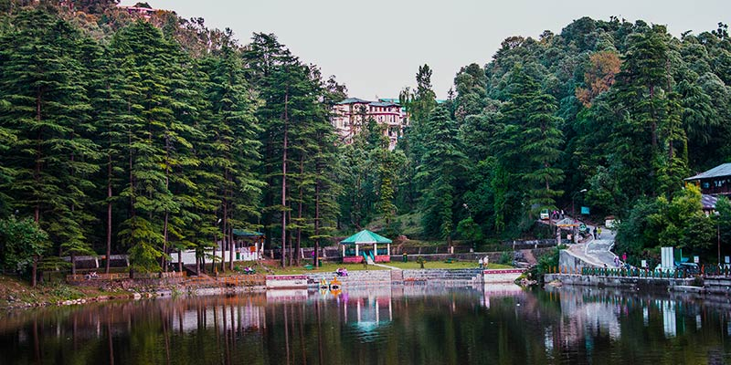

Dal Lake is a small mid-altitude lake (1,775 m above sea level) near the village of Tota Rani in Kangra district (Himachal Pradesh) in northern India. The name 'Dal Lake' is taken from Kashmir's Dal Lake.
The lake is surrounded by deodar trees and is considered to be a sacred spot as there is small Shiva mandir (shrine) on its bank. There are different kinds of fish that live in this lake. The lake has greenish water.
Location
Distance from Dharamshala: 11 km..
Dal Lake is a small mid-altitude lake (1,775 m above sea level) near the village of Tota Rani in Kangra district (Himachal Pradesh) in northern India. The name 'Dal Lake' is taken from Kashmir's Dal Lake.
The lake is surrounded by deodar trees and is considered to be a sacred spot as there is small Shiva mandir (shrine) on its bank. There are different kinds of fish that live in this lake. The lake has greenish water.
Location
Distance from Dharamshala: 11 km..

Dal Lake
Dal Lake is a small mid-altitude lake (1,775 meters above sea level) situated at a distance of 11 kilometers away from Dharamshala near the village of Tota Rani on Macleodganj Naddi road in Kangra district Himachal Pradesh). Dal Lake is 2 KM walk westwards from MacLeodganj bazaar. Nestling amidst lush green forests of deodar trees, the Dal Lake is famous for its scenic beauty and pilgrimage center. The area around Dal Lake is a natural paradise. The area of the lake is around one hectare (i.e. 10,000 square meters). On the bank of Dal Lake a famous Lord Shiva temple is located, which is considered to be very sacred and as old as 200 years. According to one legend a sage named Durvasa prayed to Lord Shiva here. Every year during rainy season, on the day of Radhasthami, a huge number of Lord Shiva devotees flock to the Dal Lake to attend famous festival celebrated to mark the presence of Lord Shiva and take holy dip in the sacred waters of the lake. It is believed that that the source of lake waters is mainly the famous and sacred Manimahesh Lake (situated at Bharmour, Distt. Chamba) and those who cannot take holy bath in the Manimahesh lake which is situated at the altitude of 13,500 feet and at a very difficult and inhospitable climate take dip in the waters of Dal Lake. Ma Kali Temple is also situated on the other end of the Lake. The lake has natural springs on the Northern side and according one legend Lord Shiva and Ma Parvati kunds are also located in it .
 The Malady Affecting the Lake
Over the years due to anthropogenic and natural reasons the lake has been swallowed away by the huge load of silt. More than 30 per cent area of the lake has turned out into a meadow. The remaining area of the lake has ten to five feet load of fine silt deposited over it. Coupled with it, the natural system of purification of lake has also got disturbed. The valves fixed for draining out the silt have not been operated for years together. The leakage of lake waters prevented the water to overflow. It disturbed the natural cleaning system of the lake. The lake has further been plagued by large scale pollution due to the increase of population in its catchments area and due to feeding to fish which got multiplied here disproportionately to the capacity of the lake and its waters. To compound the problem further, the leakage of the lake increased all of sudden on 11th of June, 2009. On the advice of the Fisheries Department, the fish had to be transferred to other location to save it from death. And after few days the lake has dried up completely.
The Campaign
For the last many years a thinking was going on to save lake. Some meetings were also held involving the experts. The work of de-siltation of lake was started in May, 2008 through NREGA which could be continued for a month only. Thereafter on 15th of June, 2009 a campaign was started involving the local population to de-silt the lake. The silt of the lake is being dumped on Strawberry road on temple land which is automatically getting converted into a parking which is very much required at this location. Responsibilities were also distributed to various Departments and organizations.
The Help Required
As on today the total load of silt in the lake is estimated at 13,600 cubic meters. There is need of using mechanized methods to take out the silt from the lake. Besides, public participation is also required in the gigantic and historical task. Huge amount of funds which can run into lacs are required for various works which have been detailed in the list of tasks assigned to various Departments. Help can be provided in the shape of sponsoring Excavators, Tippers, Tractors etc. Funds can also be deposited with the Temple Trust account which is operated by the Chairman of the Trust i.e. SDM Dharamshala. There is a plan to start de-siltation drive in a big way in the month of October 2009. And we target to complete the de-siltation and beautification part of the lake by June, 2010. Help in any shape including expert advice will be highly solicited.
The Malady Affecting the Lake
Over the years due to anthropogenic and natural reasons the lake has been swallowed away by the huge load of silt. More than 30 per cent area of the lake has turned out into a meadow. The remaining area of the lake has ten to five feet load of fine silt deposited over it. Coupled with it, the natural system of purification of lake has also got disturbed. The valves fixed for draining out the silt have not been operated for years together. The leakage of lake waters prevented the water to overflow. It disturbed the natural cleaning system of the lake. The lake has further been plagued by large scale pollution due to the increase of population in its catchments area and due to feeding to fish which got multiplied here disproportionately to the capacity of the lake and its waters. To compound the problem further, the leakage of the lake increased all of sudden on 11th of June, 2009. On the advice of the Fisheries Department, the fish had to be transferred to other location to save it from death. And after few days the lake has dried up completely.
The Campaign
For the last many years a thinking was going on to save lake. Some meetings were also held involving the experts. The work of de-siltation of lake was started in May, 2008 through NREGA which could be continued for a month only. Thereafter on 15th of June, 2009 a campaign was started involving the local population to de-silt the lake. The silt of the lake is being dumped on Strawberry road on temple land which is automatically getting converted into a parking which is very much required at this location. Responsibilities were also distributed to various Departments and organizations.
The Help Required
As on today the total load of silt in the lake is estimated at 13,600 cubic meters. There is need of using mechanized methods to take out the silt from the lake. Besides, public participation is also required in the gigantic and historical task. Huge amount of funds which can run into lacs are required for various works which have been detailed in the list of tasks assigned to various Departments. Help can be provided in the shape of sponsoring Excavators, Tippers, Tractors etc. Funds can also be deposited with the Temple Trust account which is operated by the Chairman of the Trust i.e. SDM Dharamshala. There is a plan to start de-siltation drive in a big way in the month of October 2009. And we target to complete the de-siltation and beautification part of the lake by June, 2010. Help in any shape including expert advice will be highly solicited.
BACK